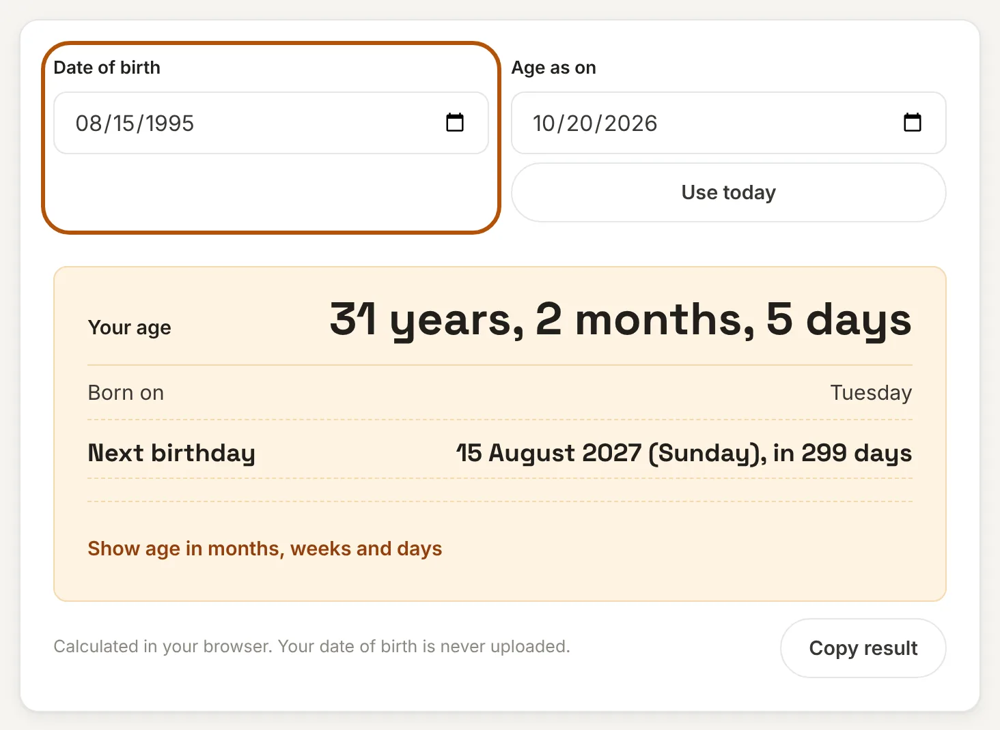
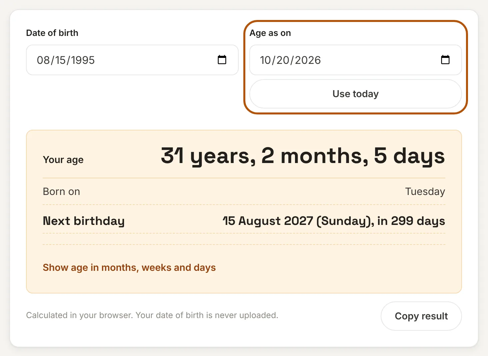
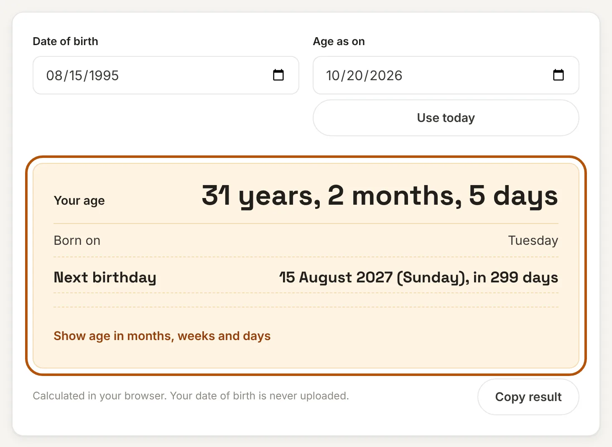
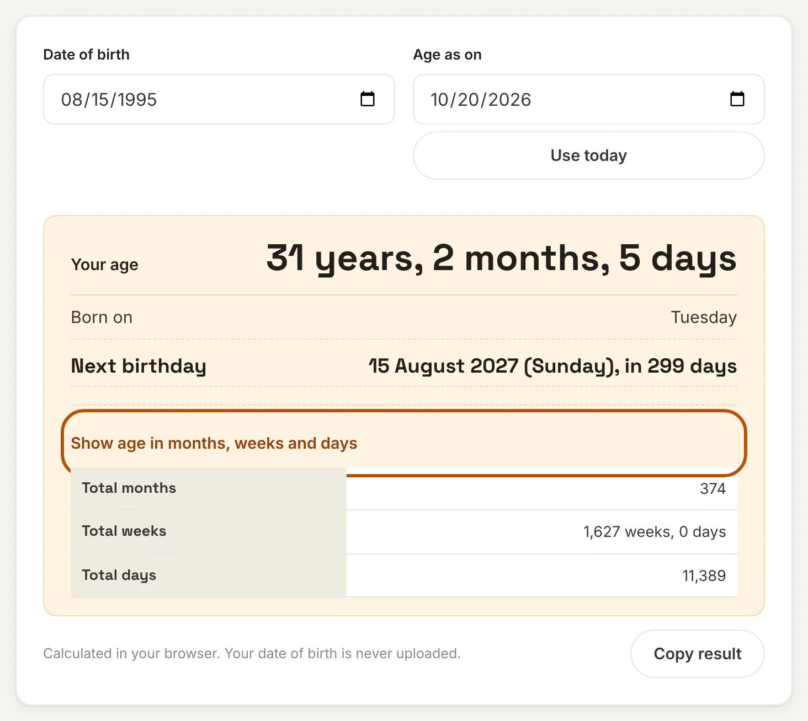

What is an age calculator?
An age calculator tells you exactly how old someone is, in years, months and days, from their date of birth. Counting by hand is easy to get wrong because months have 28, 29, 30 or 31 days and leap years add an extra day.
This age calculator does the counting for you. Enter a date of birth and it shows the exact age, the day of the week you were born, the total months, weeks and days you have lived, and how long is left until your next birthday. You can also work out the age on any other date, such as an exam cut-off or a form deadline.
How to use this age calculator
Step 1: Enter the date of birth
Tap the Date of birth box and pick the date. On a phone this opens the date picker. On a computer you can type the date or use the calendar. The box shows dates in your device's own format.

Step 2: Choose the date to calculate the age on
The Age as on box starts with today's date. To find the age on another day, such as the last date of an application form, change it. Press Use today to go back to today's date.

Step 3: Read the result
Your age shows in years, months and days. Below it you see the weekday you were born and the date of your next birthday with the number of days left.

Step 4: See the age in months, weeks and days
Open Show age in months, weeks and days to see the same age in a single unit. Use Copy result to save a summary.

How the age is worked out
The calculator counts whole months from the date of birth first, then counts the days that are left over. For a birth date of 15 August 1995 and an "as on" date of 20 October 2026:
- From 15 August 1995 to 15 October 2026 is 31 years and 2 months.
- From 15 October to 20 October is 5 days.
- So the age is 31 years, 2 months and 5 days.
The total is 374 months, or 11,389 days, which is exactly 1,627 weeks. The next birthday is 15 August 2027, a Sunday, which is 299 days away.
Worked examples
| Date of birth | Age as on | Age | Total days |
|---|---|---|---|
| 1 January 2000 | 20 October 2026 | 26 years, 9 months, 19 days | 9,789 |
| 15 August 1995 | 20 October 2026 | 31 years, 2 months, 5 days | 11,389 |
| 25 December 1985 | 31 March 2027 | 41 years, 3 months, 6 days | 15,071 |
| 15 June 2010 | 14 June 2026 | 15 years, 11 months, 30 days | 5,843 |
| 31 January 1990 | 1 March 2023 | 33 years, 1 month, 1 day | 12,082 |
| 29 February 2000 | 1 March 2026 | 26 years, 0 months, 1 day | 9,497 |
Special cases: month ends and 29 February
If you were born on the 31st and a month has fewer days, the calculator uses the last day of that month. A person born on 31 January 1990 reaches one month on 28 February and is 33 years, 1 month and 1 day old on 1 March 2023.
People born on 29 February have a real birthday only in leap years. In other years this calculator counts the birthday on 28 February. Some people and some official rules use 1 March instead, so if an exact legal age matters, check which rule your form follows.
Where an exact age matters
- Exam and job forms: Notices often say "age as on" a cut-off date. Enter that date in the Age as on box.
- School admission: Schools set a minimum age on a particular date.
- Insurance and investments: Premiums and eligibility depend on age. For savings plans, try the SIP Calculator or the PPF Calculator.
- Milestones: Find out how many days old you are, or on which weekday you were born.
Frequently asked questions
How do I calculate my age from my date of birth?
Subtract the birth year from the current year, then adjust if your birthday has not come yet this year. For an exact answer in years, months and days, enter your date of birth above and the calculator does the counting.
How can I find my age on a particular date?
Type your date of birth, then change the "Age as on" date to the day you need, for example the cut-off date in a job notice. The age shown is your age on that date.
How many days old am I?
Open "Show age in months, weeks and days". The total days is the number of days from your birth date to the "Age as on" date. For example, someone born on 15 August 1995 is 11,389 days old on 20 October 2026.
What day of the week was I born?
The result shows the weekday of your date of birth. A person born on 15 August 1995 was born on a Tuesday.
How does the calculator treat a 29 February birthday?
In years that are not leap years, it counts the birthday on 28 February. Some rules use 1 March, so check your form if the exact day matters.
Is my date of birth sent to a server?
No. This tool runs entirely in your browser. What you enter is never uploaded or stored.
Disclaimer: This tool gives results for convenience. For legal, school or exam eligibility, follow the rules and the dates stated by the authority concerned. See our disclaimer.